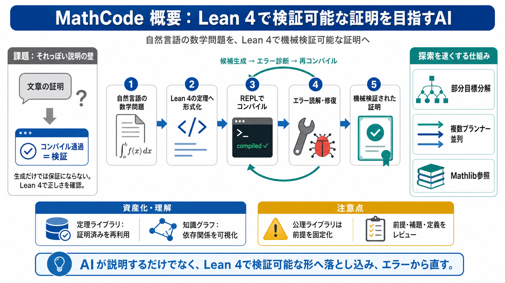

Lean projects
This project contains formalization of the relationship between so-called `acl`-pairs and valuation rings. If `K` and `F…

自然言語の数学問題を Lean 4 の定理（命題）へ変換し、形式的に「検証できる証明」を試みるターミナル型AIです。 生成だけでなく、REPLでコンパイル結果（エラー）を読み、修復まで回します。
AIが文章で証明らしく書いても、その正しさは人間のチェックに依存しがちです（＝機械検証の欠如）。 Lean 4なら、コンパイルしてエラーが出ないことが確かめられます。
MathCodeは証明探索を、プログラミングのデバッグに近い反復として扱います。 永続的なREPL（永続 REPL / persistent REPL）で、編集→コンパイル→エラー診断→修復を現実的な速度で回します（初回ウォームアップ後〜0.4秒の言及）。
ユーザーの数学記述をLean 4の定理へ変換し、コンパイルで正しさを確認しながら証明案を改善します。 生成・探索・修復の中心に、Lean REPLとLSP診断が置かれます。
難問は一発で証明できないため、ツリー状の部分目標分解（部分目標 decomposition）が効きます。 さらに複数プランナー並列（parallel planners）で戦略の多様性を確保し、ベスト戦略を採用します。
Mathlibなどの既存定理・補題を参照し、探索効率を上げます。 leansearch.net / Loogle で補題を探し、LSP診断に基づいて修復する、とされています。
生成した定理を永続的にライブラリ化し、再利用できるのが強みです。 一方で「公理ライブラリ」は、会話上の前提を保存する仕組みで、研究では前提を固定化する点に注意が必要です（妥当性レビューが要る）。
Obsidianの知識グラフで、定理の依存関係（どの補題が効いたか）を可視化します。 後続の証明や学習の理解コストを下げ、レビューや引き継ぎを助けます。
MathCodeは、証明案をLeanでコンパイルし、エラーを根拠に修復する点が特徴です。 そのため生成物の正しさは形式的に（前提の範囲で）担保されやすくなります。
探索効率（ライブラリ参照・サブゴール分解・並列）と、学習/研究の継続性（永続化・知識グラフ）が同時に効く設計です。 技術要素が成功確率に直結しやすい点が、実務上の見どころになります。
提示情報だけでは、成功率・得意/苦手・証明の可読性・「ベスト証明」の基準は定量的に不明です。 特に公理ライブラリは便利ですが、数学的に意図した前提と一致するかはユーザーが責任を持って確認する必要があります。
MathCodeは「AIが説明する」より、「Lean 4で検証可能な証明へ落とし込み、エラーで学習しながら直す」ことに重心があります。 研究利用では、生成物を受け入れる前に前提（公理ライブラリ）・依存補題・定義をレビューする運用が重要です。
This project contains formalization of the relationship between so-called `acl`-pairs and valuation rings. If `K` and `F…
uh you have you have to download a lot of data each time you have to start a new project and math is something that you …
### Key Results 5/6 IMO 2025 problems solved with formally verified proofs Solutions verified down to foundational ax…
JULY 2026 Microsoft Research reports on how Lean, via the Aeneas toolchain, formally verifies production cryptographic …
LEAN logo.png In 2013, I launched the Lean project) with the goal of bridging the gap between automated and interactive…